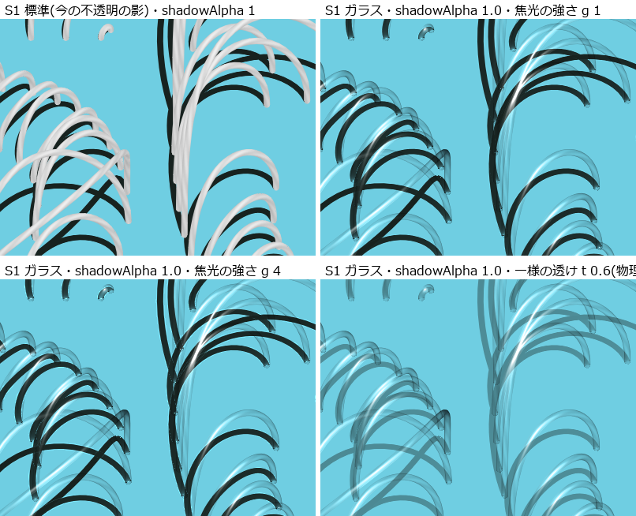
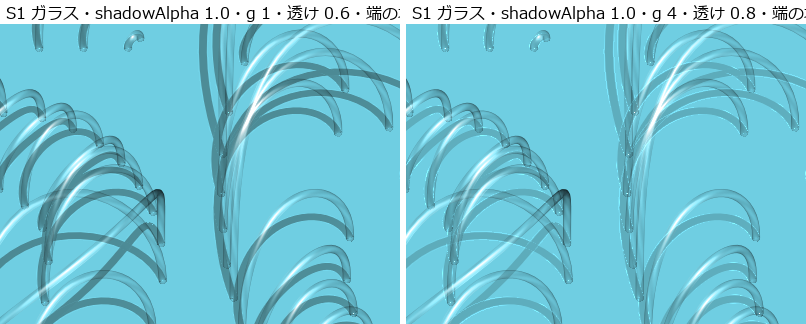
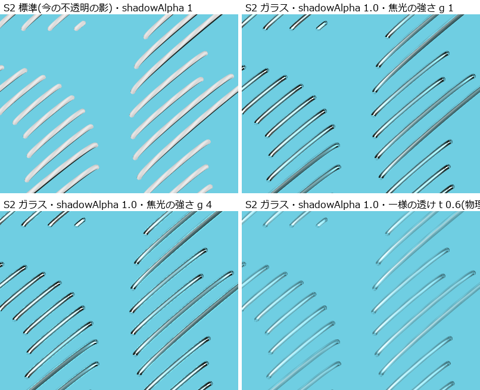
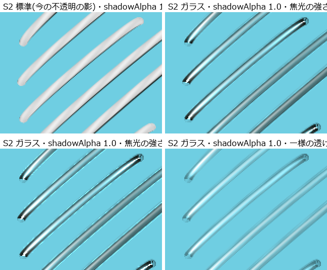
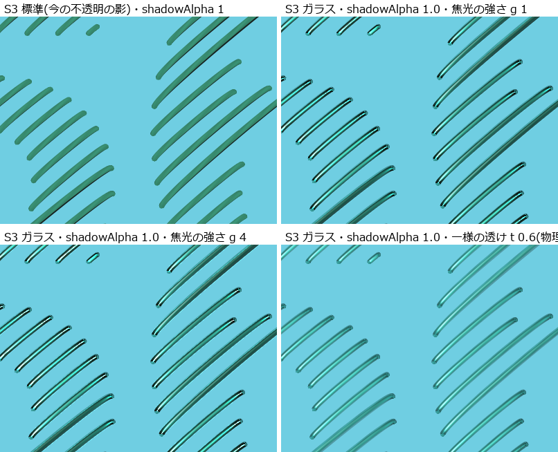
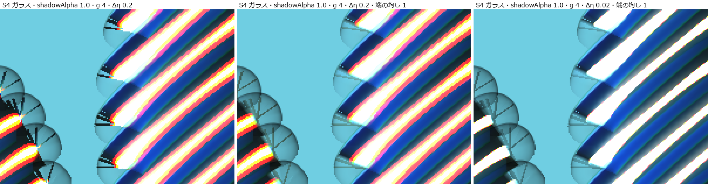
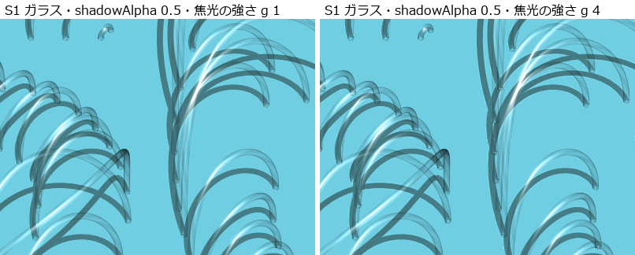

本物の頁の糸・照りの上に、影だけを CPU で計算した物理の影を重ねた静止画である。焦光の強さ g・透け t・端の均しは、まだ UI に無い。

物理のままだと、高い弧の影は標準と同じく黒い(誤りではなく物理)。

推奨案 (B)。右がガラスらしく見える組の候補。


糸が布に近いと、影の中に焦光の明るい筋が立つ。物理だけで出る。


Δη 0.2 で筋の縁に虹。実のガラス程度の 0.02 ではほぼ見えない。白の飽和は誇張(g 4)の帰結。
